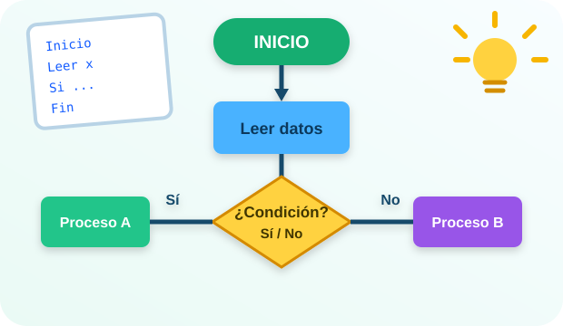

UNIDAD I
Metodología para la solución de problemas
Problemas, algoritmos, diagramas y pseudocódigo
Analiza problemas y transforma ideas en soluciones lógicas mediante algoritmos.

Problemas, algoritmos, diagramas y pseudocódigo
Variables, datos, operadores y expresiones
Selección simple, doble, anidada y múltiple
Para, Mientras, Repetir, contadores y banderas
Vectores, matrices, arreglos y modularización
Libros, visor PDF y semblanza profesional
Herramientas y recursos visuales para aprender lógica de programación.